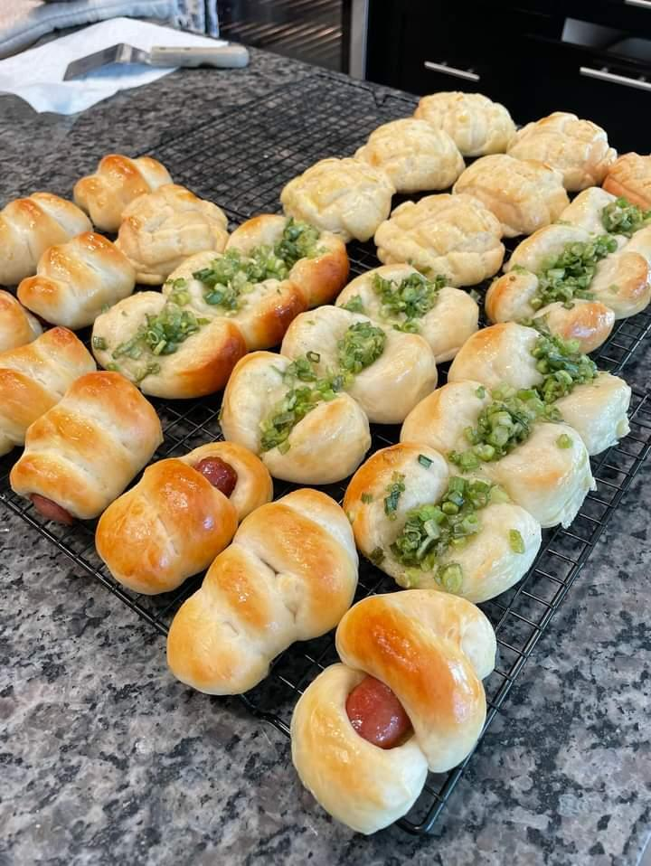

journal post 5
date: october 31st, 2023
This image is about a baking tray of food, presumably Chinese pastries due to my own experiences and familiarity with these foods. It seems to be a homemade hangout type of photo, due to the presence of an over and countertops not typically found in a commercial restaurant. Upon viewing this image, I came up with the idea of a menu type website for the project, especially if the subject matter pertains to food. A menu with interactable food items that pop up the food would be an interesting project and is fitting to what is seen in this image.
The mysterious part is if this is homemade or home baked, as it could be very possible that it is not. Although it is well to presume, they are homemade. The lack of human expression is interesting, as there is a lot of experience that can be shown in this image.
